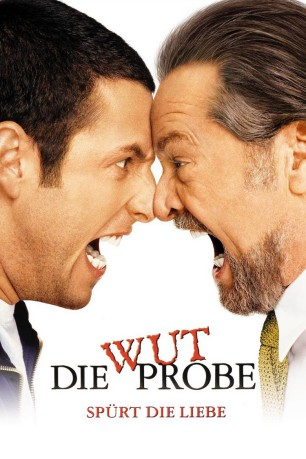

#3815 Die Wutprobe
Alternativ: Anger Management
 
 IMDB-Wertung: 6.2 / 10
IMDB-Wertung: 6.2 / 10  Metascore: 0
Metascore: 0 
US-amerikanische Komödie, in der der eigentlich ganz friedfertige Dave Buznik es schafft auf einem Flug durch ein Missverständnis, an dem sein Sitznachbar, Dr. Buddy Rydell, nicht ganz unbeteiligt ist, zu einer Deaggressions-Therapie verdonnert zu werden. Sein Therapeut ist Rydell. Doch der scheint selbst Probleme mit Wutausbrüchen zu haben.
Jahr: 2003
Dauer: 105 Minuten
FSK: 12
Land: USA Studio: Columbia PicturesTonspuren: DD5.1 - ,
Untertitel: Deutsch,
Auflösung: 1080p (1920x800) Größe: 6471 MB
Genre: Komödie
Regisseur:  Peter Segal
Peter Segal
Drehbuch: Nick Ball
Soundtrack:
Darsteller:
 Adam Sandler als Dave Buznik
Adam Sandler als Dave Buznik Jack Nicholson als Dr. Buddy Rydell
Jack Nicholson als Dr. Buddy Rydell Marisa Tomei als Linda
Marisa Tomei als Linda Luis Guzmán als Lou
Luis Guzmán als Lou Allen Covert als Andrew
Allen Covert als Andrew Lynne Thigpen als Judge Brenda Daniels
Lynne Thigpen als Judge Brenda Daniels Kurt Fuller als Frank Head
Kurt Fuller als Frank Head Jonathan Loughran als Nate
Jonathan Loughran als Nate Krista Allen als Stacy
Krista Allen als Stacy January Jones als Gina
January Jones als Gina Woody Harrelson als Galaxia / Security Guard Gary
Woody Harrelson als Galaxia / Security Guard Gary John Turturro als Chuck
John Turturro als Chuck Kevin Nealon als Sam
Kevin Nealon als Sam Conrad Goode als Bailiff / Lexus Man
Conrad Goode als Bailiff / Lexus Man- Gina Gallego als Bar Waitress
- Nancy Carell als Flight Attendant
- Don Diamont als Man in Seat
 Isaac C. Singleton Jr. als Air Marshall
Isaac C. Singleton Jr. als Air Marshall- John McEnroe als Himself
- Rudy Giuliani als Mayor Rudy Giuliani
- Derek Jeter als Himself
- Lori Heuring als Anger Management Receptionist
 Tony Genaro als Cabbie
Tony Genaro als Cabbie- Clint Black als Masseur
 Lorna Scott als Lady in Restroom
Lorna Scott als Lady in Restroom Bonnie Hellman als Wife at Table
Bonnie Hellman als Wife at Table- Joe Howard als Husband at Table
 Kevin Dunigan als Man #1 in Anger Group
Kevin Dunigan als Man #1 in Anger Group- Paul Renteria als Man #2 in Anger Group
 Sidney Ganis als Neighbor
Sidney Ganis als Neighbor- Larry Morgan als Pool Player
 Michael Arthur als Police Officer
Michael Arthur als Police Officer- Jonathan Osser als Young Dave Buznik
- Nicole Segal als Girl Playing in Water
- Zack Abramowitz als Baseball Fan , uncredited
- Dakota Anderson als Stadium Guard , uncredited
- Wyatt Ben Bernstein als Yankee Fan , uncredited
- Sho Brown als Spectator , uncredited
 Arnold Chon als Buddhist Monk , uncredited
Arnold Chon als Buddhist Monk , uncredited- Matt Clifford als Baseball Fan , uncredited
 Brad Davis als Yankee Fan , uncredited
Brad Davis als Yankee Fan , uncredited- Alex Emanuel als Bar Patron , uncredited
- Aaron Fiore als Peanut Vendor , uncredited
- Tina M. Freeborn als Baseball Fan , uncredited
- Silas Gaither als (uncredited
 John Joseph Gallagher als Frank Fan , uncredited
John Joseph Gallagher als Frank Fan , uncredited Heather Graham als Kendra , uncredited
Heather Graham als Kendra , uncredited- Joe Kane als Baseball Fan , uncredited
- Silawn Lewis als New York Yankees Fan , uncredited
- Robert J. Locke als Eddie Plank , uncredited
Datei: X:\2003(N-Z)\Wutprobe, Die (2003, FSK12, 1920x800).mkv seit 16.06.2016
Festplatte: HD 2003-2004-2005(A-F)
 Es gibt insgesamt 46 Filme in der Gruppe '2003(N-Z)'
Es gibt insgesamt 46 Filme in der Gruppe '2003(N-Z)'